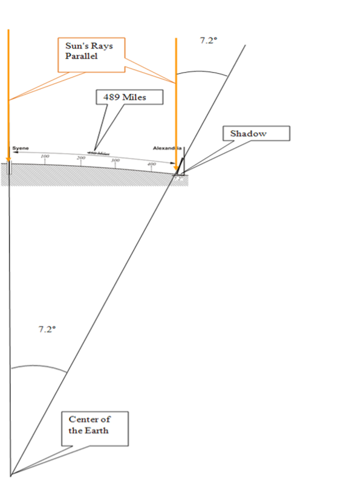
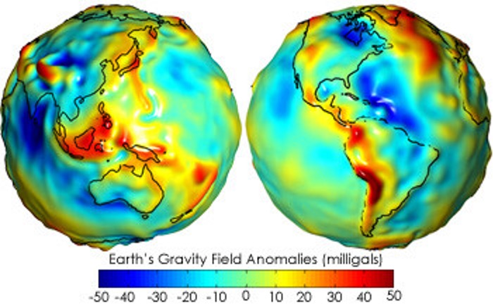
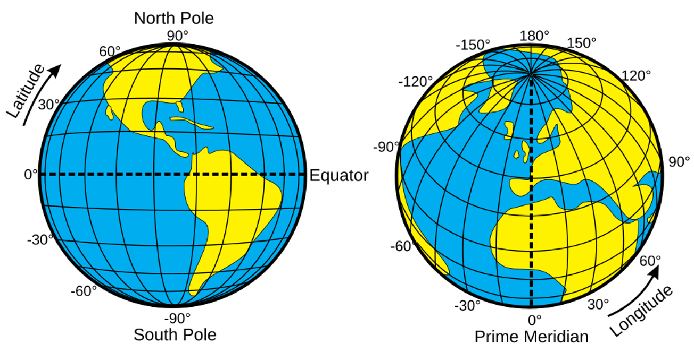
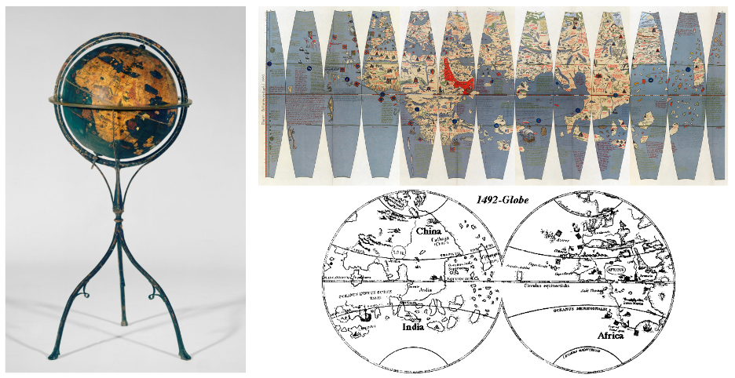

4 Locations in the geospatial world
We live in a geospatial world, where we describe places using names, landmarks, or directions in daily lives. Across fields such as science, agriculture, business, urban planning, public health, civil engineering, and navigation, it is essential to go beyond simple descriptions and use precise, standardized systems to define and record locations on Earth surface. In such cases, we use coordinate systems to assign numerical values (such as latitude and longitude) to pinpoint every location across the globe in a systematic and consistent way.
A coordinate system provides a standardized framework for recording, analyzing and sharing spatial information. It enables us to accurately capture, analyze and visualize real-world processes, whether it is to examine the migration patterns of birds, map cropland performance, monitor real-time locations of airplanes, analyze the spread of an infectious disease, or identify hot spots in a city during a heat wave. Different agencies and organizations have developed various coordinate systems suitable for different tasks, such as global navigation or local mapping.
All spatial data—data with location information—is based on some form of coordinate system. To effectively use existing spatial data or create new datasets, we need to understand what coordinate systems are and how they are established. The first and essential step to develop such coordinate systems is to model the shape of the Earth. So, let’s start here.
4.1 Shape of the Earth
The development of modern space technologies makes it easier to study Geodesy—the fundamental properties of the Earth, including its geometric shape, its orientation in space, its gravity field, as well as the changes of these properties over time. For instance, the Earthrise (Figure 1) was a photo taken by NASA astronaut William “Bill” Anders on December 24, 1968, during the Apollo 8 mission. For the first time, the photo showed the Earth—a beautiful, fragile blue sphere—rising from the barren lunar surface, revealing its shape, location and unity in the vastness of space. Fifty years to the day after taking the photo, Anders observed, “We set out to explore the moon and instead discovered the Earth.” However, people’s curiosity about the shape of the Earth goes far back in the history, long before these space technologies were available.

4.2 The rise of the spherical earth
Based on a few empirical observations, the ancient Greeks were able to establish a spherical earth. Aristotle (384 – 322 B.C.) provided some of the earliest empirical evidence for spherical earth, including 1) Ships disappear hull-first when they sail over the horizon; 2) Earth casts a round shadow on the moon during a lunar eclipse; 3) Different constellations are visible at different latitudes. Based on these observations, Aristotle concluded that “Again, our observations of the stars make it evident, not only that the Earth is circular, but also that it is a circle of no great size. For quite a small change of position to south or north causes a manifest alteration of the horizon” (Aristotle).
The ancient Greeks not only established the spherical earth but also calculated the earth’s circumference. In 200 BC, the Greek mathematician and geographer Eratosthenes noticed that objects in Syene (the city now known as Aswan located in Egypt) casted no shadows at noon in midsummer, indicating that the sun was directly overhead. Meanwhile, a pillar casted a shadow at the same time in Alexandria, which is located 489 miles north of Syene. The angle between the shadow and the pillar was 7.2 degrees. Based on the idea that the earth was a sphere, Eratosthenes reasoned the angle between Alexandria and Syene at the center of the Earth had to be 7.2 degrees, which is 1/50th of 360 degrees Figure 4.2. Based on this assumption, Eratosthenes calculated the circumference of the entire planet as
$$\text{Circumference} = 50 \times 489 \text{ miles} = 24{,}450 \text{ miles}$$
This was very close to being right (the equatorial circumference is ~24,901 miles and the polar circumference is ~24,860 miles).

With the fall of Roman empire, knowledge about the shape and size of the Earth in Europe became fragmented. While Europe went through intellectual decline, the Islamic world was preserving and expanding upon Greek and Roman knowledge by translating and studying texts from these previous times (the Islamic Golden Age). Unlike figures such as Aristotle, who heavily relied on deductive logic, the Islamic scholars emphasized on empirical verification, believing that theories should match observations but not the other way around. They confirmed the spherical nature of the Earth and refined earlier calculations of Earth’s circumference. For instance, Persian scholar Al-Biruni made highly accurate calculations of Earth’s radius using trigonometry and the height of a mountain. His value of the Earth’s radius (~6340 km) was within 1% of the modern accepted mean radius of 6,371 km, or different of only 2% from the mean radius of curvature of the reference ellipsoid at the latitude of measurements (Sparavigna 2014).
4.3 The oblate or prolate spheroid?
It is not until the 17th century that development of physics, especially the understanding of motion and forces, drove new ideas about the shape of the Earth. René Descartes, the French mathematician and philosopher, proposed a prolate earth model, which is elongated at the poles and flattened at the equator (Figure 3b). Based on different underlying physics theories, Isaac Newton and Christiaan Huygens argued for the oblate Earth model—a sphere flattened at the poles and bulging at the equator (Figure 3a). In his 1687 masterpiece, Philosophiae Naturalis Principia Mathematica (Mathematical Principles of Natural Philosophy), Newton calculated the radii of earth and reported that the earth is higher under the equator than at the poles, and that by an excess of about 17 miles. This value is close to the right number, which is 13 miles (Radius at the equator = 3963 miles or 6378 km; and Polar radius = 3950 miles or 6356 km). The debate between the two earth models was settled in the 18th century, when two competing French expeditions, one to the equator in Peru and another to the Arctic Circle in Lapland, were sent out to measure the length of a degree of latitude at different locations, which conclusively proved Newton’s oblate Earth model.
4.4 Geoid
The real resolution of the shape of the earth happened with the Space Age the 20th century. Satellite based earth observations provide a consistent method to measure the Earth’s shape and its subtle changes. Morden gravity missions such as the NASA Gravity Recovery and Climate Experiment (GRACE) mission can measure changes in the Earth’s gravity field, which is directly related to the distribution of mass on and within the planet, offering an invaluable method to measure the Earth’s shape. Using the Earth’s gravity field, we are now able to create a Geoid that is the constant gravity surface of the earth Figure 4.3.

The geoid is not a perfect, smooth sphere. Instead, it is a bumpy, irregular surface because the Earth’s mass is not distributed perfectly evenly. For example, areas with more mass (like large mountain ranges or denser rock underground) have a stronger gravitational pull, which causes the geoid to bulge outward. Conversely, areas with less mass (like deep ocean trenches or less dense rock) have a weaker pull, and the geoid dips inward.
The most fundamental property of the geoid is that it is an equipotential surface, meaning that at every point on the geoid, the force of gravity is the same, and it acts perpendicular to the surface. For a surveyor, this means a plumb line (a string with a weight at one end) will always be perfectly perpendicular to the geoid at any location, and a level surface (like a calm body of water) will always be perfectly parallel to the geoid. Thus, Geoid is often defined as a hypothetical Earth surface that represents the mean sea level in the absence of winds, currents, and most tides. It is what the ocean surface would take under the influence of gravity of earth only (not affected by any force other than Earth’s gravity, e.g., wind, waves, the Moon…). The geoid is the name given to the shape that the Earth would assume if it were all measured at mean sea level - close to but NOT equivalent to actual mean sea level.
4.5 Datum
While the geoid is able to capture the Earth’s shape in detail, it is too complex and irregular to model or use as the reference surface for locations on the Earth surface. Thus, an ellipsoid (aka spheroid)–a simplified smooth surface–is used instead (Figure 5). However, the discrepancy between the geoid and ellipsoid produces a source of error to locations (Figure 5b).
Here, we define the term datum as a reference surface of the earth that is used for plotting locations across the globe. In this case, an ellipsoid with the origin in latitude and longitude and orientation is used to represent datum. The origin illustrates at which the ellipsoid is tied to a known (often monumented) location on or inside Earth (not necessarily at 0 latitude 0 longitude), indicating how to fit the ellipsoid to geoid. Orientation is how we position the ellipsoid, after we tied it to a known location – we still have some limited capacity to move it around relative to geoid.
Essentially, datum is a mathematical model to reference a coordinate system against (Figure 6). In reality, people use different datums for different geographical areas, because the Earth has an imperfect, lumpy shape, and no single simple mathematical model can perfectly represent it everywhere. Thus, datums are designed to be the best possible fit for a specific region or for the entire globe. For instance, surveyors and cartographers would create a datum that provided the best fit for their particular country or continent to allow them to choose a reference ellipsoid that most closely matched the curvature of the Earth in that specific region. This approach made mapping and surveying highly accurate within that region, but it created significant problems when trying to connect different regional systems. For example, the North American Datum of 1927 (NAD 27) was a local datum that was extremely accurate for North America but would be offset by hundreds of meters or more if used in Europe or Asia (Figure 6b).
The common horizontal datums used in North America including the North American Datum of 1927 (NAD27), the North American Datum of 1983 (NAD83) and the World Geodetic System of 1984 (WGS84).
The NAD27 datum was developed for measurements of the United States and North America. It has its center positioned at Meades Ranch in Kansas. The NAD83 datum was developed by the National Geodetic Survey and Canadian agencies in 1986. It is used as the datum for much data for the United States and the North American continent as a whole. In the 1990s, the National Geodetic Survey (NGS), in collaboration with individual states, undertook a major project to update the NAD83 datum by establishing a new, more precise network of reference points across the United States (High Accuracy Regional Network of fitted points; HARN).
The WGS84 datum was developed by the U.S. Department of Defense and is used by the Global Positioning System (GPS) for locating points worldwide on Earth’s surface (a global datum). WGS84 has been revised six times since its original realization in 1987. The most recent version is WGS84 (G2139) implemented on 3 January 2021. Originally, the difference between WGS84 (as rolled out in 1987) and NAD83 (as first introduced in 1986) coordinates was so small that transformation was unnecessary. That is no longer the case when it comes to NAD83 2011 (2010.0) and WGS84 (G1762).
In order to minimize coordinate changes over time, NAD 1983 is tied to the North American, Pacific (for Hawaii, Guam, etc.), and Marianas tectonic plates, while WGS 1984 is tied to the International Terrestrial Reference System (ITRF) which is independent of the tectonic plates. Over time, the two coordinate systems have become increasingly different and the difference can be ~1 to 2 meters within the continental United States.
Similar to the horizontal datum, a vertical datum refers to a surface of zero elevation to which heights (elevations) of various points are referenced using either an ellipsoid (ellipsoidal datum) or a specific geoid (orthometric datum) as a reference surface for height. Unlike a horizontal datum, a three-dimensional ellipsoidal datum provides the foundation for accurate determination of ellipsoidal height, which is the height of that same point of the Earth surface is the vertical distance from that point to the ellipsoid. On the contrary, orthometric height in North America is defined as the vertical distance measured from adopted geoid to the ground surface height, along a line that is always a right angle to all intervening equipotential surfaces. Considering the fact that the geoid is a surface of constant gravitational potential that closely approximates the mean sea level, whenever you see elevation data described as “X” feet/m above or below sea level, it is referring to the orthometric height. A related definition is the geoid height, which is defined as the difference between the geoid and ellipsoid, describing the height of the Earth’s geoid surface above or below an idealized reference ellipsoid Figure 4.4.

4.6 Geographic Coordinate System (GCS)
Once the datum is fixed, we can use the datum to define a geographic coordinate system, which is a global reference system for determining the exact position of a point on Earth. In addition to a datum, a GCS includes a prime meridian that specifies the location of 0° longitude, and an angular unit often in degrees Figure 4.5. Latitude (a.k.a. parallels) is used to represent the east-to-west direction and equator is defined as the starting point of 0 degree latitude. Longitude (a.k.a. meridians) is used to represent the north-to-south direction (the North Pole to the South Pole). The International Meridian Conference (1884, US) defined the use of the meridian at the Royal Observatory in Greenwich, England as the zero reference line (prime median).

Since each datum defines a slightly different size, shape, and position of the Earth’s reference ellipsoid, a location’s coordinates (latitude and longitude) will also change when you switch datums. A datum shift describes the difference in coordinate values for the same point on Earth when measured against two different datums. This difference can range from a few centimeters to hundreds of meters, depending on the datums involved and the location of the point Figure 4.6. A datum transformation—a set of math formulas— can be used to convert point coordinates from one datum to another. However, errors up to several meters may occur during the transformation and errors accumulate with repeated transformations, because datum transformation is not an exact, one-to-one conversion but a mathematical process that uses a set of parameters (translations, rotations, and scale factors) to convert coordinates from one datum to another. These parameters are themselves estimates based on a best-fit model between the two datums, and they contain their own uncertainties. Thus, converting datums should be done only when necessary (use the fewest transformations possible), and care should be taken in choosing the best method. It is also suggested that using the same transformation each time to transform between these two datums. It is worth noting that dealing with some of the old datums may be problematic because their datum may not be well defined using the modern mathematical parameters.

4.7 Map projection
While a geographical coordinate system (GCS) provides an accurate way to locate any point on the globe, it’s not practical for many tasks. For example, it is impossible to accurately measure distances and areas directly from a sphere or ellipsoid. To perform tasks like land surveying, field work, navigation, and urban planning, we need a flat, two-dimensional map with linear units of measure (e.g., meters or feet). This is where map projections come in. A map projection is a mathematical transformation used to convert the three-dimensional, curved surface of a GCS into a two-dimensional, flat plane Figure 4.7. This process is necessary to create a usable map, but it’s also the source of all map distortion, because it is impossible to flatten a sphere without stretching or compressing some of its features. Every map projection introduces some type of distortion—whether in shape, area, distance, or direction. Different projections are designed to preserve one or more of these properties at the expense of others, which is why cartographers choose a specific projection based on the purpose of the map.

To make a map projection, cartographers need three foundational components: a developable surface, the aspect and points of tangency or secancy. These components define the geometric structure of the map projection. The developable surface is a geometric shape that can be flattened into a two-dimensional plane without any stretching or tearing. The most commonly used developable surfaces are the cylinder, plane (aka an azimuthal surface), and cone (Figure 11). Each of these interacts with the globe in a unique way and is better suited to particular regions or mapping purposes. This initial step is what allows a curved surface to be represented on a flat map.
The aspect refers to the orientation of this developable surface in relation to the Earth’s axis of rotation. It determines how the surface is positioned (Figure 12). The three main aspects are normal (aligned with the axis, such as a cylinder wrapped around the equator), transverse (perpendicular to the axis), and oblique (at an angle). The choice of aspect greatly influences the pattern of distortion and determines where the areas of least distortion will be on the final map. For instance, a normal cylindrical projection is most accurate near the equator, while a transverse one is better for a north-south region.
Finally, the points of tangency or secancy describe how the developable surface is positioned in relation to the globe (Figure 13). A tangent projection touches the globe at a single point (for a plane) or a single line (for a cylinder or cone). A secant projection intersects the globe at two lines or circles. At these specific points or lines, the map scale is true, and there is no distortion, while distortion increases as one moves away from them. Secant projections tend to distribute distortion more evenly than tangent ones by spreading out the distortion across a larger area, as the scale is true at two separate lines. This makes them useful for regional maps where balance is important.
Together, these three components—developable surface, aspect, and contact points—define the structure of a projection and determine how faithfully the map represents the curved surface of the Earth. Understanding how they interact allows cartographers to choose the projection that best suits the purpose and geographic focus of the map.
4.8 Map projection types based on distortion
Map projections can be categorized based on the type of distortion they minimize or preserve. Since it is impossible to represent the curved surface of the Earth on a flat map without some distortion, cartographers choose projections depending on which geographic property—area, shape, distance, or direction—is most important to preserve for the map’s purpose. Based on the type of distortion they minimize, map projections are categorized into four main types: conformal, equal-area, equidistant, and azimuthal (aka true direction) projections (Figure 14).
Conformal projection preserves angles and shapes locally. In these projections, the shape of small areas is maintained, but area and distance may be distorted. This means that at any point on the map, the angles are true, and the shapes of small features like coastlines and rivers are accurately represented. Thus, conformal projections are commonly used for navigational purposes because they represent compass directions accurately. However, this preservation of shape comes at the expense of area; landmasses may appear larger or smaller than they really are. The Mercator projection is the most famous conformal projection, widely used for marine navigation because it preserves compass directions. However, it greatly exaggerates the size of areas near the poles—for example, Greenland appears almost the same size as Africa, though it is much smaller in reality.
Equal-area projection preserves the relative sizes of landmasses and other features. These projections ensure that areas are represented in correct proportion, meaning that the proportions between countries, continents, or other regions are accurate in terms of area. This makes them useful for thematic or statistical maps where comparing sizes is important (e.g., population density or forest cover). To achieve this (preserve area), these projections must distort shapes, angles, and scale and the distortion of shape is generally more pronounced the farther a location is from the center of the projection.
Equidistant projectionpreserves distances from one or more specified points to all other points on the map. While they cannot preserve distances across the entire map, they are valuable when the focus is on a central location and its relationship to other places. As a result, equidistant projections are useful for applications like radio and seismic mapping where accurate distances from a central location are critical.
Azimuthal or true-direction projections preserve accurate directions from a central point to all other locations on the map. These are often used for air route maps or polar charts, where direction from the center is more important than shape or area accuracy. A common example is the azimuthal equidistant projection centered on the North Pole, which shows all meridians as straight lines radiating from the center, making it easier to plot great circle routes—shortest paths between two points on a sphere.
In addition to these projection categories, compromise projection aims to balance distortion rather than preserving any single properties (area, shape, distance or direction) perfectly. Instead, compromise projection attempts to minimize overall distortion in all properties to produce a map that is visually pleasing and balanced in accuracy across the map. These projections are especially useful when the goal is to create general reference maps, such as world maps used in textbooks, atlases, or classrooms. For example, the Robinson projection, developed by Arthur H. Robinson in 1963, is one of the most widely used compromise projections. It was specifically designed to create a visually balanced representation of the entire world. On the Robinson map, the shapes and sizes of continents are moderately distorted, but the distortion is distributed more evenly across the map than in more specialized projections like Mercator. It avoids the extreme stretching of landmasses near the poles that occurs in conformal projections, and it presents continents like Africa and South America in proportions that are closer to reality. While the Robinson projection doesn’t preserve true scale, shape, area, or direction, its smooth, oval appearance and balanced distortions make it highly effective for thematic and general-purpose maps where no single property needs to be perfectly accurate. In fact, it was used by the National Geographic Society for nearly three decades as their standard world map projection.
It is important to remember that projection always introduce distortion. Each type of projection serves a different purpose and involves trade-offs between the various geographic properties. Choosing the right one depends on which characteristics are most essential for the map’s intended use.
4.9 Projected / Planar Coordinate Systems
Based on specific geographic coordinate system and map projection, a projected or planar coordinate system identifies locations by (x, y) coordinates (often in meters or feet) on a grid with equally spaced horizontal and vertical lines (Cartesian coordinates). Because mathematical calculations relating latitude and longitude to positions of points on a given map can become quite complicated, rectangular grids have been developed for the use of surveyors. In this way, each point may be designated merely by its distance from two perpendicular axes on the flat map (Figure 15). The Y axis normally coincides with a chosen central meridian, with y increasing north. The X axis is perpendicular to the Y axis at a latitude of origin on the central meridian, with x increasing east. X and Y coordinates are called “eastings” and “northings,” respectively. To avoid negative coordinates, we may have “false eastings” and “false northings” by adding constant values to all X and Y coordinates.
4.9.1 Projected coordinate system example 1: Universal Transverse Mercator Projection (UTM)
The Universal Transverse Mercator (UTM) projection is a widely used map projection system that applies a specific version of the Transverse Mercator projection on a global scale (Figure 16). It is designed to provide a consistent and accurate way of mapping locations anywhere on Earth by dividing the planet into a series of zones, each with its own projection. The UTM system divides the Earth between 84°N and 80°S latitude into 60 vertical zones, each 6 degrees of longitude wide. Each zone is projected individually using a Transverse Mercator projection, which means that the cylinder used for the projection is oriented longitudinally (north-south), rather than wrapping around the equator like in the regular Mercator projection. This “transverse” orientation minimizes distortion along a central meridian within each zone, making it suitable for mapping narrow north–south regions. To further reduce distortion, the UTM system uses a secant version of the Transverse Mercator projection, meaning the projection surface intersects the globe along two standard lines. This helps keep the scale distortion to a minimum within each zone—usually less than 1 part in 1,000. Each zone in the UTM system is assigned a unique number from 1 to 60, starting at 180° longitude and moving eastward. Additionally, the system uses Northing and Easting coordinates (measured in meters) rather than latitude and longitude. To avoid negative numbers, the equator is assigned a false northing of 10,000,000 meters in the southern hemisphere, and the central meridian in each zone is assigned a false easting of 500,000 meters. The UTM system is particularly useful for large-scale mapping (e.g. topographic maps, engineering surveys, and military applications) because of its high positional accuracy over relatively small areas — typically within one UTM zone. However, because each zone is designed independently, maps that span multiple zones may require conversion or special handling to align correctly.
1) Determine the UTM zone
Zone = floor((Longitude + 180)/6) + 1
Central Median = Zone × 6 - 183;
2) Determine the (x, y) within the zone – Easting and Northing
Northing – number of meters north of Equator
Easting – number of meters east of central median of each zone
To avoid negative numbers –
False Easting: 500,000 m + Easting
False Northing (for southern hemisphere): 10,000,000 m + Northing
4.9.2 Projected coordinate system example 2: State Plane Coordinate System (SPCS)
State Plane Coordinate System (SPCS) is a grid-based system for determining coordinates of locations within the United States, designed in 1930s for large scale mapping of the US. It divides the US into over 120 zones, generally follow county boundaries, except in Alaska (Figure 17). Most states are divided into multiple zones—for example, Alaska has 10, Texas has 5, while Nebraska has only 1—to maintain high positional accuracy by limiting each zone’s geographic extent.
A baseline is set south of the zone and an origin meridian to the west of the zone and coordinates are eastings and northings in feet. Each zone has its own projection parameters, and the choice of projection depends on the general orientation of the zone. They can use different projections depending on the orientation of the state being projected and where it is located within the US. The Lambert Conformal Conic projection is usually used for east-west oriented zones (e.g., Tennessee) while Mercator projection is generally used for north-south oriented zones (e.g., Illinois). In some cases, the Oblique Mercator projection is used, particularly for certain zones in Alaska that do not align well with standard orientations.
Maps are tools, and like any tool, the best one for the job depends on the task. This is NOT just a theoretical problem. Every map, from a web map to a printed atlas, is a conscious choice to use a particular projection to serve a specific purpose. For the scenarios below: which properties of a map projection would be most critical for you to preserve, and why?
Scenario 1 The Global Shipping Company. “You need to plan the most efficient routes for cargo ships traveling from Asia to the Americas.”
Scenario 2 The UN Climate Change Committee. “You are creating a map to show the global impact of rising sea levels.”
Scenario 3 The National Geographic Magazine Cartographers. “You are creating a detailed map of the continent of Africa for an educational atlas.”
4.10 References
Aristotle On the Heavens. The Works of Aristotle: Oxford University Press, 297-298.
Sparavigna AC. 2014. Al-Biruni and the Mathematical Geography. PHILICA.